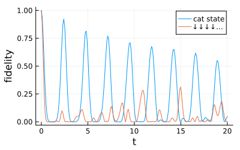
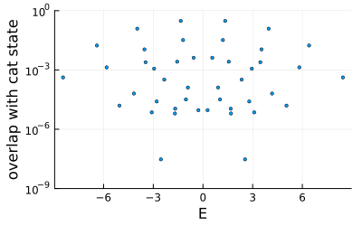
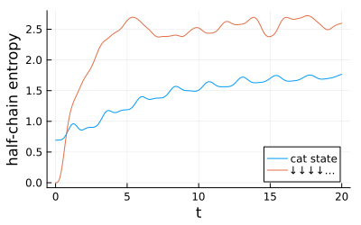
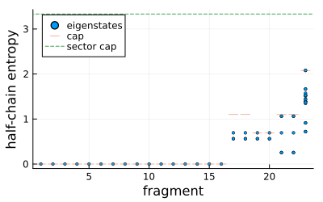

Hilbert-space fragmentation and quantum many-body scars
Some Hamiltonians split the space into blocks that no conventional (local) symmetry labels. fragment finds the block containing given basis states, by following the nonzero matrix elements of the Hamiltonian from them.
using FermionicHilbertSpaces, LinearAlgebra, Plotsusing FermionicHilbertSpaces: fragmentThe PXP model
Rydberg atoms in the blockade regime are described by the PXP chain
\[H = \sum_k P_{k-1} X_k P_{k+1},\]
where $X_k$ flips atom $k$ and $P_k$ projects it onto the ground state $|{\downarrow}\rangle$. An atom can only flip when its neighbours are in the ground state. We take a ring, so atoms $N$ and $1$ are neighbours.
@spins S 1 // 2N = 14Hfull = hilbert_space(S, 1:N)P(k) = 1 // 2 - S[mod1(k, N)][:z]X(k) = 2S[k][:x]pxp = sum(P(k - 1) * X(k) * P(k + 1) for k in 1:N)H = fragment(pxp, Hfull, ["↓"^N])dim(H), dim(Hfull)(843, 16384)The fragment of the state with all atoms in the ground state is the space without neighbouring excited atoms, which a constraint on the basis states also gives. The blockade space, with open or periodic boundaries, is a single fragment, so for the PXP model fragment gives no new information.
Requiring the number of neighbouring excited pairs to be zero builds the blockade space without enumerating the full space (see Constrained Hilbert spaces). The last term is the bond that closes the ring.
excited(k) = 1 // 2 + S[mod1(k, N)][:z]blockade = sum(excited(k) * excited(k + 1) for k in 1:N) => 0Hblockade = hilbert_space(S, 1:N, blockade)@assert Set(basisstates(H)) == Set(basisstates(Hblockade))Each term $P_{k-1} X_k P_{k+1}$ maps blockade states to blockade states, but the Hamiltonian is stored expanded into products such as $S^z_{k-1} S^x_k$, which map states of the fragment outside it. projection = true drops those matrix elements.
ham = representation(pxp, H, Matrix; projection = true);Scars
The states $|\mathbb{Z}_2\rangle = |{\uparrow\downarrow\uparrow\downarrow\cdots}\rangle$ and its translate $|\mathbb{Z}_2'\rangle$ are swapped by the dynamics. We follow their cat state $(|\mathbb{Z}_2\rangle + |\mathbb{Z}_2'\rangle)/\sqrt{2}$, which has zero momentum and is even under inversion, in that sector of the ring's translations and reflections, built with symmetric_sector.
perms = [[mod1(r * i + s, N) for i in 1:N] for s in 0:(N - 1) for r in (1, -1)]B = symmetric_sector(H, factors(H), (perms, ones(length(perms))))E, V = eigen(Hermitian(Matrix(B' * ham * B)))catstate = B' * (representation("↑↓"^(N ÷ 2), H) + representation("↓↑"^(N ÷ 2), H)) / sqrt(2)down = B' * representation("↓"^N, H);A quench from the cat state shows revivals of the fidelity, while the state with all atoms in the ground state relaxes without revivals.
ts = range(0, 20; length = 200)function fidelity(ψ) c = V' * ψ return [abs2(sum(abs2.(c) .* exp.(-im * E * t))) for t in ts]endplot(ts, fidelity(catstate); label = "cat state", xlabel = "t", ylabel = "fidelity", size = (400, 250))plot!(ts, fidelity(down); label = "↓↓↓↓…")
The revivals come from a tower of eigenstates at nearly equally spaced energies, the quantum many-body scars, which overlap much more with the cat state than the other eigenstates do. The scar states alternate between zero momentum and momentum $\pi$, so this sector holds every other state of the tower.
scatter( E, abs2.(V' * catstate); yscale = :log10, ylims = (1.0e-9, 1), label = false, ms = 2, xlabel = "E", ylabel = "overlap with cat state", size = (400, 250))
The half-chain entanglement entropy follows from partial_trace from the fragment to the first half of the chain; the fragment is not a tensor product across the cut, but partial_trace maps to the half chain directly. In the plot, the entropy of the state with all atoms in the ground state grows quickly to a thermal value, while that of the cat state grows slowly and oscillates with the revival period.
entropy(ρ) = sum(λ -> λ > 1.0e-12 ? -λ * log(λ) : 0.0, eigvals(Hermitian(ρ)))half = partial_trace(H => hilbert_space(S, 1:(N ÷ 2)))evolve(ψ, t) = B * (V * (exp.(-im * E * t) .* (V' * ψ)))halfentropy(ψ) = [entropy(half(evolve(ψ, t))) for t in ts]plot(ts, halfentropy(catstate); label = "cat state", xlabel = "t", ylabel = "half-chain entropy", size = (400, 250))plot!(ts, halfentropy(down); label = "↓↓↓↓…")
Fragmentation from dipole conservation
The pair-hopping chain, here with open boundaries,
\[H = \sum_k S^+_k S^-_{k+1} S^-_{k+2} S^+_{k+3} + \mathrm{h.c.}\]
conserves the charge $\sum_k S^z_k$ and the dipole moment $\sum_k k S^z_k$. These do not label all its blocks: the two states below both lie in the sector with zero charge and zero dipole moment, but in fragments of very different sizes.
N = 12Hfull = hilbert_space(S, 1:N)pairhop = sum(S[k][:+] * S[k + 1][:-] * S[k + 2][:-] * S[k + 3][:+] for k in 1:(N - 3)) + hccharge = sum(S[k][:z] for k in 1:N)dipole = sum(k * S[k][:z] for k in 1:N)Hneutral = hilbert_space(S, 1:N, [charge => 0, dipole => 0])seeds = ["↑↓↑↓↑↓↓↑↓↑↓↑", "↑↑↑↓↓↓↓↓↓↑↑↑"]@assert all(!iszero(state_index(s, Hneutral)) for s in seeds)[dim(fragment(pairhop, Hfull, [s])) for s in seeds]2-element Vector{Int64}:
20
1Splitting the whole sector into fragments shows that one fragment holds a large share of it, while most of the others are single frozen states.
remaining = Set(basisstates(Hneutral))fragments = []while !isempty(remaining) F = fragment(pairhop, Hneutral, [first(remaining)]) setdiff!(remaining, basisstates(F)) push!(fragments, F)endsort!(fragments; by = dim)sizes = dim.(fragments)(; sector = dim(Hneutral), fragments = length(sizes), frozen = count(==(1), sizes), largest = maximum(sizes))(sector = 58, fragments = 23, frozen = 16, largest = 20)An eigenstate of a fragment has Schmidt rank across the middle of the chain at most the number of distinct left halves among the fragment's basis states, which caps its half-chain entropy. In the plot, ordered by fragment size, the frozen states have no entanglement and small fragments stay at or below their low caps. Only the largest fragment reaches substantial entanglement; it saturates its own cap, which still lies well below that of the whole sector.
lefthalves(F) = length(unique(s -> s.states[1:(N ÷ 2)], basisstates(F)))caps = [log(lefthalves(F)) for F in fragments]entropies = map(fragments) do F half = partial_trace(F => hilbert_space(S, 1:(N ÷ 2))) [entropy(half(v)) for v in eachcol(eigvecs(Hermitian(representation(pairhop, F, Matrix))))]end@assert all(maximum(Sv) <= cap + 1.0e-10 for (Sv, cap) in zip(entropies, caps))@assert all(Sv -> all(<(1.0e-10), Sv), entropies[sizes .== 1])scatter( reduce(vcat, [fill(i, length(Sv)) for (i, Sv) in enumerate(entropies)]), reduce(vcat, entropies); ms = 2, label = "eigenstates", xlabel = "fragment", ylabel = "half-chain entropy", legend = :topleft, size = (400, 250))scatter!(eachindex(caps), caps; marker = :hline, ms = 6, label = "cap")hline!([log(lefthalves(Hneutral))]; ls = :dash, label = "sector cap")
This page was generated using Literate.jl.